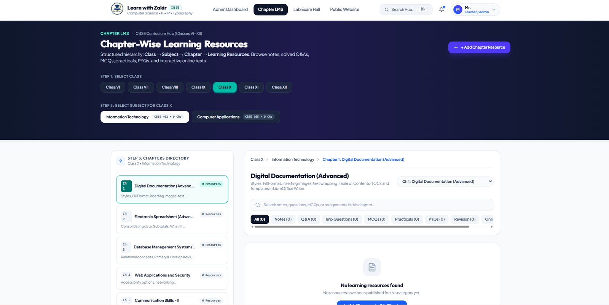
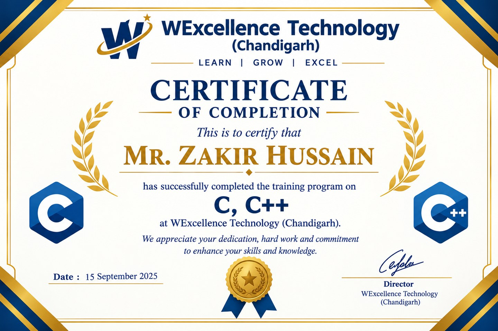
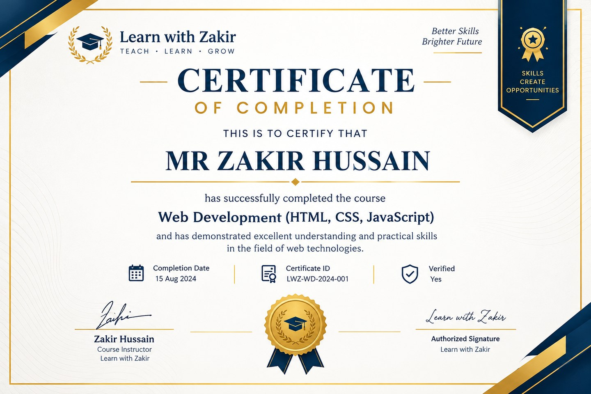
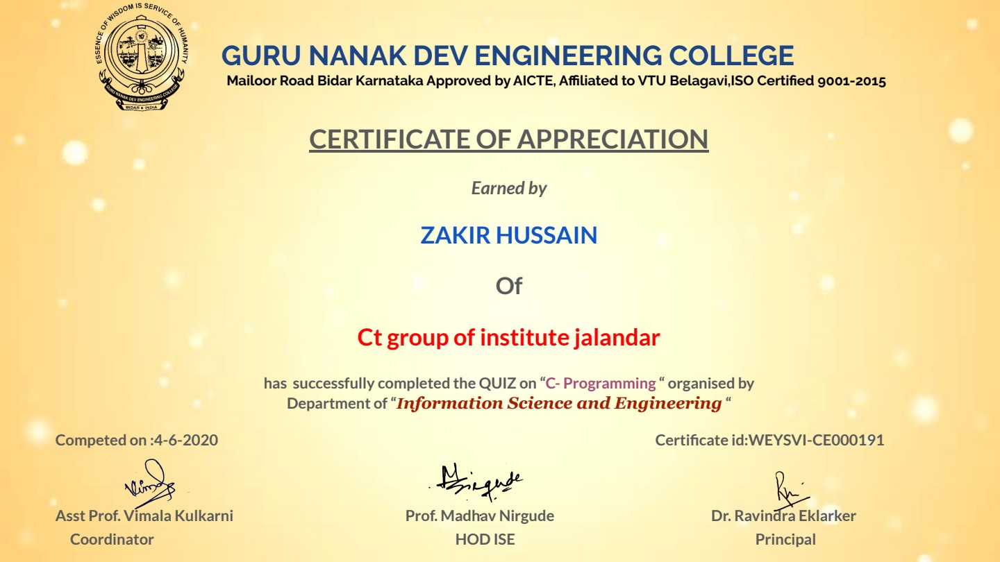
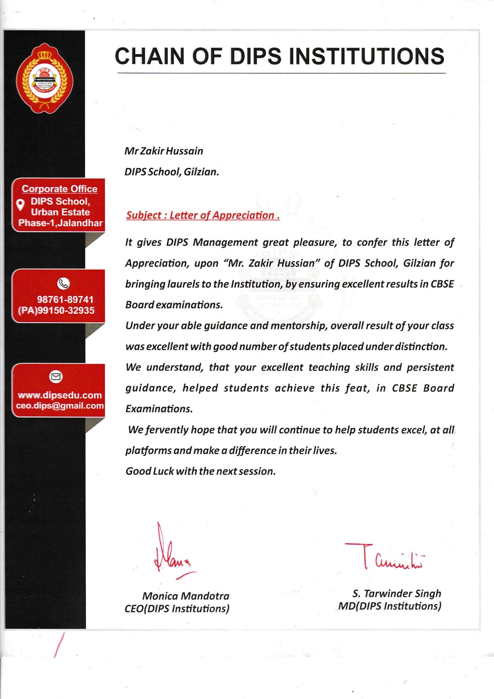

01Foundation · 2016–20
Bachelor of Computer Science
University of Kashmir, Srinagar. Graduated with distinction across programming, databases, and practical labs.
00
Computer Science / Teaching / Making
PGT Computer Science / IT Educator & Developer
Educator Innovator Developer
Transforming Computer Science Education Through Technology, Creativity, and Practical Learning.
Now building Learn with Zakir01 About
An educator's perspective, a developer's toolkit, and a belief that the best learning is something students can build with.
I teach Computer Science. I build with it. And I'm most at home where the two meet.
I'm Zakir Hussain — a PGT Computer Science and IT educator, web developer, and technology enthusiast. My bachelor's and master's degrees in Computer Science gave me the technical foundation; the classroom gave that knowledge a purpose.
I've taught senior-secondary Computer Science and IT, developed curriculum-aligned lessons, run practical lab sessions, and tracked student progress through individual feedback and regular reports. Outside the classroom, I create digital resources and web experiences that help students keep learning beyond the lesson.
Logic in the lesson.
Craft in the code.
Care in the classroom.
Zakir Hussain
Computer Science Educator & Developer01.1The path
Each stage added a new lens: how systems work, how software is made, and how understanding is taught.
University of Kashmir, Srinagar. Graduated with distinction across programming, databases, and practical labs.
I.K. Gujral Punjab Technical University, Jalandhar. Advanced study in programming, DBMS, networking, and software engineering.
Chain of DIPS Institution, Jalandhar. Curriculum, lesson planning, lab sessions, and student progress.
Creating Learn with Zakir and digital learning resources that give students more ways to keep going.
02 Teaching philosophy
Concepts become understanding when students have room to try, question, make mistakes, and try again.
Start with the why. Build a clear mental model before memorising the syntax.
Concepts before codeWrite the code, solve the problem, break it, fix it. Understanding lives in the reps.
Hands on the keyboardTurn concepts into something original — a script, a page, a small tool with a real purpose.
Ideas made tangibleUse quizzes, lab tasks, and reflection to make understanding visible — to the student and the teacher.
Feedback over guessworkFeed feedback forward. Iterate, refine, and return to the next challenge one level deeper.
The next versionUnderstanding isn't proven by the first answer. It's revealed by the second attempt.The classroom as a place to think out loud
03 Experience
A professional practice shaped by teaching, technology, and the practical work that connects them.
Teaching is where the ideas get tested. Building is where they get sharper.
The goal is simple: send students out with something they can do, not just something they've heard.
Chain of DIPS InstitutionJalandhar, Punjab
Independent project workRemote
04 Skills & expertise
A toolkit for teaching ideas and making them real — from the whiteboard to the browser.
Turning complex ideas into clear, buildable steps — with curriculum planning, classroom management, and room for productive mistakes.
From first Python scripts to C and C++ foundations, building clean logic and structured problem-solving habits.
Responsive, accessible interfaces built with clean structure and thoughtful interaction.
Connecting front-end experiences with the data and logic that make them work.
Practical IT support, software installation, system maintenance, and confident use of everyday productivity tools.
Multimedia, presentation tools, and digital workflows that make lessons more active, connected, and personal.
Lesson content, worksheets, notes, and visual explainers designed to be clear, reusable, and available whenever a student needs them.
Structured lab time that turns "I've seen this" into "I can build this" — through practice, testing, and technical support.
05 Selected work
A growing collection of work at the intersection of education, the web, and the way students actually learn.
A live learning hub built for the way students actually revise.
A CBSE-focused resource platform for Classes VI–XII across Computer Science, IT, and Computer Applications. Students move from structured chapters to notes, solved Q&As, practicals, previous-year papers, and online MCQ practice in one focused space.

Additional project spaces, ready for the work still taking shape.
A reserved case study for a future full-stack project. The title, story, screenshots, and live link can be added when the build is ready.
Web development placeholderA space for an educational-technology idea or learning tool. Add the project title, description, visuals, and link here when it exists.
Educational technology placeholderA placeholder for a digital classroom initiative or blended-learning experiment. Designed to grow as the idea takes shape.
Digital classroom placeholder06 Teaching & resources
Resources and methods designed to give students more ways in — and more reasons to keep going.
The lesson ends.
Learning doesn't.
A teaching practice supported by clear materials, practical exercises, and digital tools that let students revisit an idea whenever they need it.
Structured notes and explanations that turn a dense syllabus into clear, revisitable concepts. Built for first understanding and later revision.
Guided problems that move students from syntax to solving something real. Starting points, challenge tasks, and debugging drills that build fluency.
Visual explainers and downloadable resources designed for anytime access, so students can pause, revisit, and learn at their own pace.
Quick checks and question practice that make understanding visible. Topic-wise MCQs and review sets built around feedback, not just scores.
Purposeful use of digital tools to make lessons more active and connected — from live demos to digital submission and blended-learning workflows.
07 Credentials
Degrees, formal training, classroom recognition, and supporting documents — documented with care and kept honest.
Degrees, classroom recognition, and formal training — gathered here with the supporting documents.
University of Kashmir, Srinagar
I.K. Gujral Punjab Technical University, Jalandhar
Recognised three times during the academic year 2020/21.
07.1 Supporting documents
Completion certificates, quiz recognition, and a letter of appreciation, shared as supplied. Select any document to open the full image.

WExcellence Technology · Chandigarh
View certificate
Learn with Zakir
View certificate
Guru Nanak Dev Engineering College · Department of ISE
View certificate
Chain of DIPS Institutions · DIPS School, Gilzian
View letter08 Contact
Open to ideas / collaboration / good questionsInterested in education, technology, collaboration, or innovative learning experiences? Let's connect.
Start a conversation zakhu1099@gmail.comGood learning starts with a good question.
Back to top